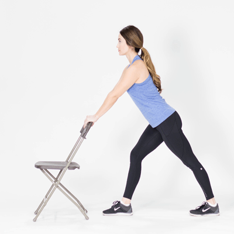

Vrti kukove u krug. Prvo na jednu stranu pa na drugu. Trudi se da ne pomeras centar ose (glavu).
Sagni se na stranu i rukom se uhvati za svoju nogu za potporu.
Drugu ruku prebaci preko glave. Ovo raditi na obe strane.
Rukama pravi pun krug od iznad glave do poda, sa tezistem u kukovima.
Uhvati se za nesto za stabilnost. Vrti nogu u krug iz kuka na obe strane.
Ovo ponovi za drugu nogu.
4. Noge
Vrti zglobove na nogama na obe strane. Dizi se na prste naizmenicno.
Dizi se na prse zajedno.
Istegni ruke iznad glave pa ih spusti na pod, zatim cucni.
Ustani, podigni ruke, i tako u krug.
Preporucila bih jos 5-10 minuta trcanja na traci, ili stepenica :3
Ukoliko ne planiras mnogo tezak i naporan trening,
dovoljno je da trcis na traci, uz osnovno zagrevanje na traci (glava, ruke i kukovi).
Istezanje

Drži 20-30 sekundi, diši duboko.
Glavne Vežbe
Ovo su vezbice bez sprava, za to kako rade sprave, pogledaj sekciju "sprave"
Klikni na vezbu koja te zanima :3
GORNJI DEO TELA
🔴 PUSH
Sklek (Push-up)
Mišići: Grudi, triceps, prednje rame
Forma: Telo prava linija, laktovi ~45°, kontrolisan silazak.
Dipsevi
Mišići: Triceps, grudi
Forma: Ramena spuštena, kontrolisan silazak, bez zaključavanja laktova.
🔵 PULL
Zgibovi
Mišići: Leđa, biceps
Forma: Povuci laktove ka dole, bez zamaha, kontrolisan silazak.
Sprave 🏋️♂️
Lat Pulldown – povuci šipku do grudi, ne zamahuj.
Ishrana 🥑
Pre-workout
Banana + jogurt ili ovsena kaša 60min pre treninga.